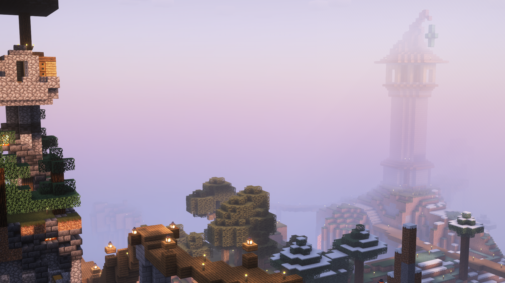
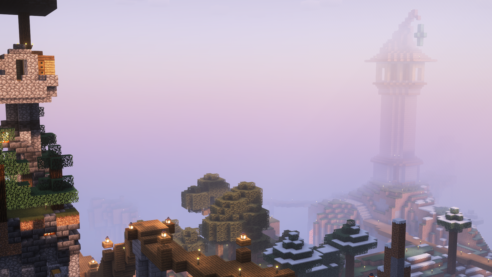
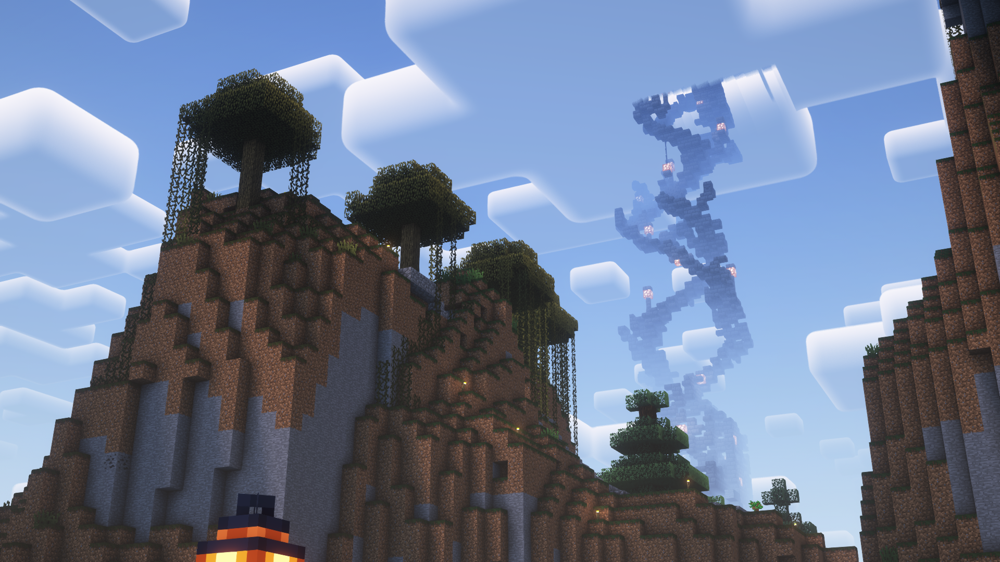
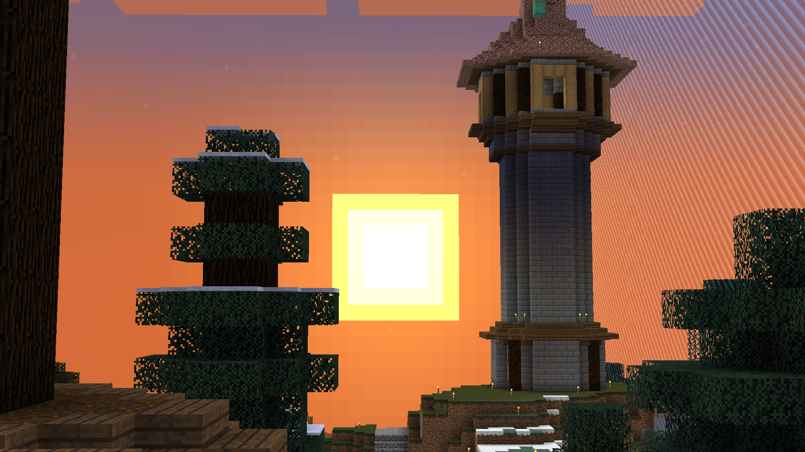
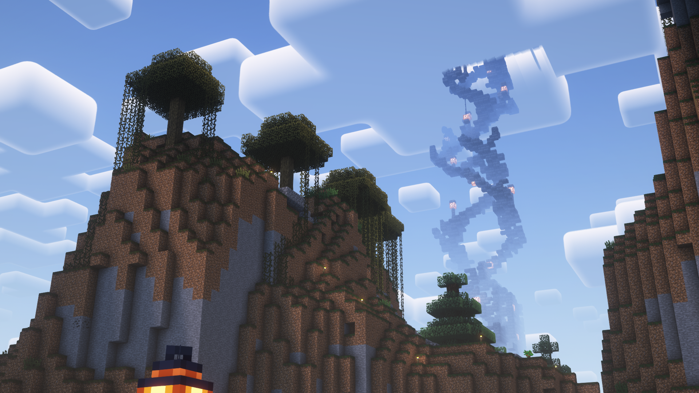
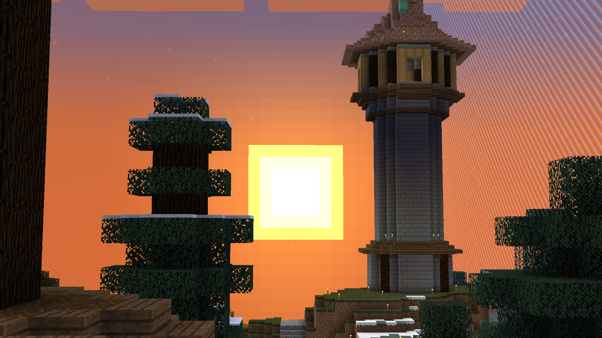
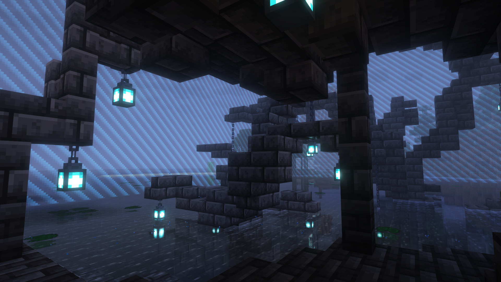
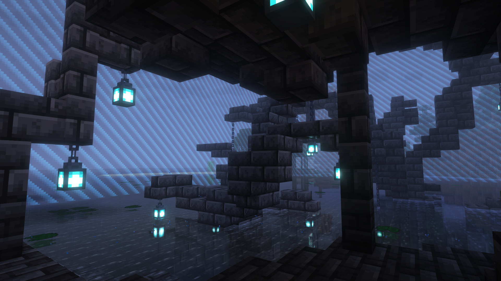

Doeball's Minecraft Server
I self-host this Minecraft server for anyone to play on! My goal with this server is to create a small and cozy community, the type that I have found the most enjoyable from my experience. Although the server runs some plugins, I do my best to avoid affecting any gameplay or mechanics and maintain the vanilla experience.
The server's twist is the highly restrictive worldborder, reducing the world to only a few chunks! This forces players to find creative and sustainable solutions to their problems. This also forces all players to live together in a small space, encouraging fun interaction! I expand the border slowly as more space is needed, and I plan to never reset the world. Everything that happens on the server is history!
The server currently runs Java 1.20.2, and I update it when all required tools are updated (and when I'm not busy). You can join at meow.doeball.ca! I'd love to see you online :3
 

 




 
